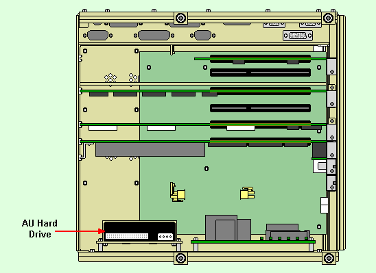
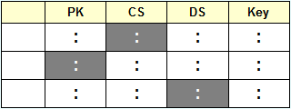

Hard Drive Operating Principles
This document details the operating principles for the AU hard drive.
Module Function
The instrument hard drive is used to:
- Temporarily store AU data.
- Keep software for operating the AU.
Hard Drive Location

Operational Overview
Each hard drive is pre-loaded with base software that allows it to communicate with the instrument CPU. Software that is required for instrument operation is loaded through the PC or user interface computer, not the AU hard drive.
Hard Drive Electrical Connectors
The hard drive is mounted horizontally in the instrument. Connections to the hard drive include:
- Four-wire power cable.
- Ribbon cable through which signals are sent and received.
The hard drive requires a clean and accurate +5 V DC. The hard drive voltage must be within 4.9 V and 5.1 V DC for the hard drive to operate properly.
Note: Measure the hard drive voltage at the connector on the hard drive, not at the 5 V DC source.
| Pin | Voltage | Wire Color |
|---|---|---|
| 1 | +5 V DC | Red |
| 2 | Ground | Black |
| 3 | Ground | Black |
| 4 | +12 V DC | White |
Jumper Settings

The gray shaded area indicates the jumper locations. To change a setting, remove the jumper and move it to the desired location.
Interacting Devices
The hard drive interacts with:
- CPU PCB
- CPU power distribution PCB